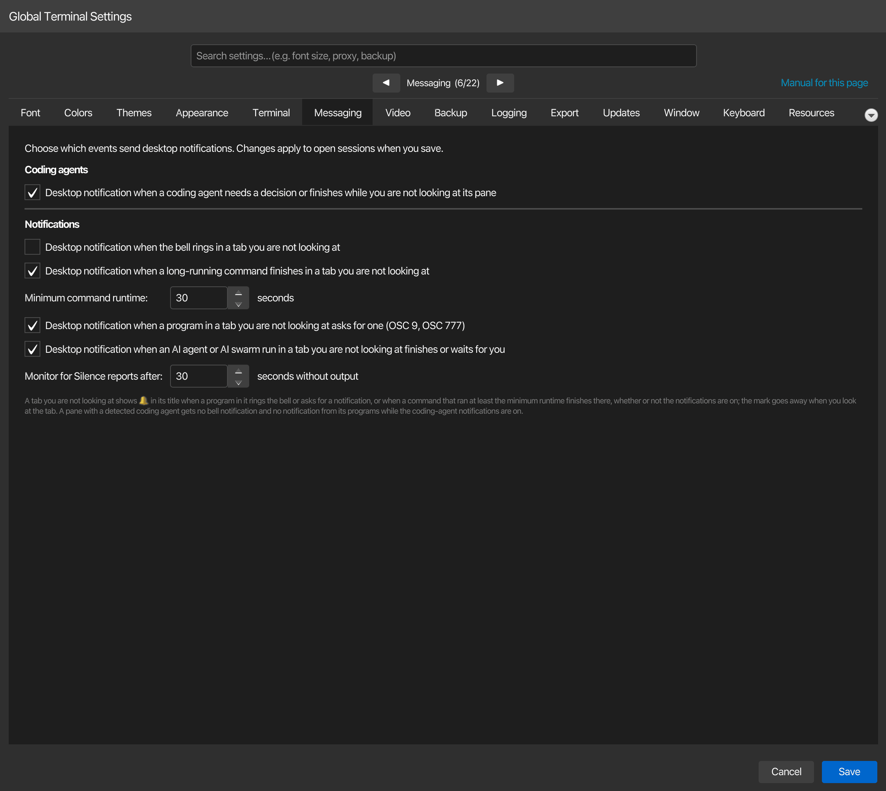

Messaging¶
Öffnen Sie Konfiguration → Globale Einstellungen → Messaging um auszuwählen, welche Ereignisse Desktop-Benachrichtigungen senden. Änderungen gelten für offene Sitzungen, wenn Sie speichern. Die bestehenden Auswahlmöglichkeiten sind in ~/.kortty/global-settings.xml gespeichert und bleiben bei einem Upgrade erhalten.

| Einstellung | Typ | Werte | Standard | Gespeichert als |
|---|---|---|---|---|
| Desktop-Benachrichtigung wenn ein Coding-Agent eine Entscheidung benötigt oder fertig ist, während Sie nicht auf sein Fenster schauen | toggle | — | On | codingAgentNotificationsEnabled |
| Desktop-Benachrichtigung, wenn die Glocke in einem Tab klingelt, den Sie nicht ansehen | toggle | — | Off | terminalBellNotificationsEnabled |
| Desktop-Benachrichtigung, wenn ein langlaufender Befehl in einem Tab endet, den Sie nicht ansehen, | toggle | — | On | commandFinishedNotificationsEnabled |
| Mindestlaufzeit eines Befehls: | Nummer | 1–3,600 seconds | 30 | commandFinishedNotificationSeconds |
| Desktop-Benachrichtigung, wenn ein Programm in einem Tab, den Sie nicht ansehen, eine solche anfordert (OSC 9, OSC 777) | toggle | — | On | remoteTerminalNotificationsEnabled |
| Desktop-Benachrichtigung wenn ein KI-Agent oder KI-Schwarm in einem Tab, den Sie nicht ansehen, beendet oder wartet für Sie | toggle | — | On | aiRunToastsEnabled |
| Auf Stille überwachen meldet nach: | Nummer | 5–3,600 seconds | 30 | terminalSilenceSeconds |
Coding-Agent-Nachrichten¶
Unter Coding-Agents schalten Sie die Desktop-Benachrichtigung, wenn ein Coding-Agent eine Entscheidung benötigt oder fertig ist, während Sie nicht auf dessen Fenster schauen, aus und speichern, um die von korTTY erkannten Agenten-Benachrichtigungen zu deaktivieren. Die Erkennung, die Seitenleiste und das App-Badge bleiben verfügbar; konfigurieren Sie diese unter Terminal und siehe Coding-Agents.
Benachrichtigungen, die direkt von Terminalprogrammen (OSC 9 / OSC 777) und lang laufenden Befehlen angefordert werden, haben auf dieser Seite eigene Schalter. Ein Agent, der auf einem entfernten Server läuft, nutzt den Programmbenachrichtigungs-Kanal, weil korTTY nur Agenten in lokalen Shells erkennt. Schalten Sie auch den entsprechenden Schalter aus, wenn Sie diesen Kanal stummschalten möchten.
Hinweise¶
- Benachrichtigungen zu lang laufenden Befehlen und ihr Minimum-Laufzeit-Feld sind nicht verfügbar, wenn die Shell-Integration unter Terminal deaktiviert ist. Die erneute Aktivierung der Shell-Integration macht die Steuerelemente wieder verfügbar.
- Auf Stille überwachen meldet nach: setzt die Verzögerung für Tabs, die über ihr Kontextmenü überwacht werden. Aktivitäts- und Stilleüberwachung sind pro Tab aktiviert, nicht über einen globalen Benachrichtigungsschalter.
- Eine Unternehmensrichtlinie kann Desktop-Benachrichtigungen deaktivieren und die Benachrichtigungsschalter sperren. Tab-Aufmerksamkeitsmarkierungen bleiben innerhalb von korTTY sichtbar.
- Siehe Terminal-Benachrichtigungen für Ereignisbehandlung und Benachrichtigungs-Klicks, und Coding-Agents für das Verhalten der Benachrichtigung über erkannte Agenten.
Benachrichtigungen
Ein Programm, das die Terminalglocke in einem Tab ertönen lässt, den Sie nicht ansehen, markiert diesen Tab immer mit 🔔, bis Sie ihn betrachten; dafür ist keine Einstellung nötig. Desktop-Benachrichtigung, wenn die Glocke in einem Tab ertönt, den Sie nicht ansehen fügt eine Desktop-Benachrichtigung mit dem Titel korTTY · und dem Tab-Namen hinzu, höchstens eine pro Pane alle 10 Sekunden. Sie ist standardmäßig deaktiviert, weil Shells die Glocke bei jeder fehlgeschlagenen Tab-Vervollständigung ertönen lassen, und ein Pane mit einem erkannten Coding-Agent erhält keine Benachrichtigung, während die coding-agent-Benachrichtigungen aktiviert sind. Die Einstellung wird bei jeder Glocke gelesen, sodass eine Änderung sofort auf offene Tabs angewendet wird, sobald Sie speichern.
In einer Shell, die für die Shell-Integration eingerichtet ist, markiert ein Befehl, der mindestens Mindestlaufzeit eines Befehls: (30 Sekunden standardmäßig) läuft und in einem Tab endet, den Sie nicht betrachten, auch diesen Tab mit 🔔. Und Desktop-Benachrichtigung wenn ein langlaufender Befehl in einem Tab endet, den Sie nicht betrachten, ist standardmäßig aktiviert und fügt eine Desktop-Benachrichtigung hinzu, die angibt, wie der Befehl beendet wurde und wie lange er lief – niemals den Befehl selbst, höchstens einmal pro Tab alle 10 Sekunden. Befehle des korTTY's KI-Agenten benachrichtigen nie. Beide sind ausgegraut, solange Verwenden Sie die Befehlsmarkierungen von Shells, die für die Shell-Integration eingerichtet sind (OSC 133). ausgeschaltet ist, und beide werden bei jedem abgeschlossenen Befehl gelesen. Siehe Terminal-Benachrichtigungen.
Ein Programm, das eine Desktop-Benachrichtigung mit OSC 9 oder OSC 777 anfordert, wie ein Coding-Agent auf einem Server, der auf Ihre Antwort wartet, markiert seinen Tab ebenfalls mit 🔔, wenn Sie nicht darauf schauen, und Desktop-Benachrichtigung, wenn ein Programm in einem Tab, den Sie nicht ansehen, eine anfordert (OSC 9, OSC 777), ist standardmäßig aktiviert. Es zeigt den Text des Programms unter einem Titel mit dem Tab-Namen an, bereinigt von Steuer- und bidi-Zeichen und auf 80 Zeichen für den Titel sowie 200 Zeichen für den Text gekürzt, höchstens ein Eintrag pro Pane alle 5 Sekunden; das Zwischenkommende wird verworfen. Ein Pane, in dem ein Coding-Agent erkannt wurde, erhält keine Benachrichtigung, während die Coding-Agent-Benachrichtigungen aktiv sind. Es erfordert keine Shell-Integration und wird bei jeder Anfrage gelesen. Siehe Benachrichtigungen von Programmen.
Desktop-Benachrichtigung, wenn ein KI-Agent oder ein KI-Schwarm in einem Tab läuft, den Sie nicht ansehen, beendet wird oder auf Ihre Rückmeldung wartet, ist standardmäßig aktiviert und gilt für korTTYs eigenen KI-Agenten und KI-Schwarm: wenn ein Lauf in einem Tab, den Sie nicht ansehen, auf Ihre Genehmigung oder ein Passwort wartet, beendet wird oder ohne Abschluss stoppt, zeigt eine Desktop-Benachrichtigung mit dem Tab-Namen in einem festen Satz an – niemals mit Prompt, Befehl oder Ausgabe, höchstens einmal pro Tab und Typ alle 10 Sekunden. Ein Terminal-Tab wird in jedem Fall mit 🔔 markiert. Es wird bei jedem Ereignis gelesen. Siehe KI-Agent und KI-Schwarm laufen.
Auf Stille überwachen meldet nach: ist die Zeit, die ein Paneel ohne Ausgabe bleiben muss, nachdem etwas gedruckt wurde, bevor ein Tab, den Sie mit Auf Stille überwachen im Rechtsklickmenü beobachten, mit 🔔 markiert wird und eine Desktop-Benachrichtigung anzeigt, standardmäßig 30 Sekunden. Die Beobachtung selbst, wie Auf Aktivität überwachen, die neue Ausgabe nach 10 Sekunden Stille meldet, wird pro Tab umgeschaltet, ist bis zum Einschalten deaktiviert und wird nie gespeichert. Die Schwelle wird jede Sekunde gelesen, sodass eine Änderung sofort auf die beobachteten Tabs wirkt, sobald Sie speichern. Siehe Tab auf Aktivität oder Stille überwachen.